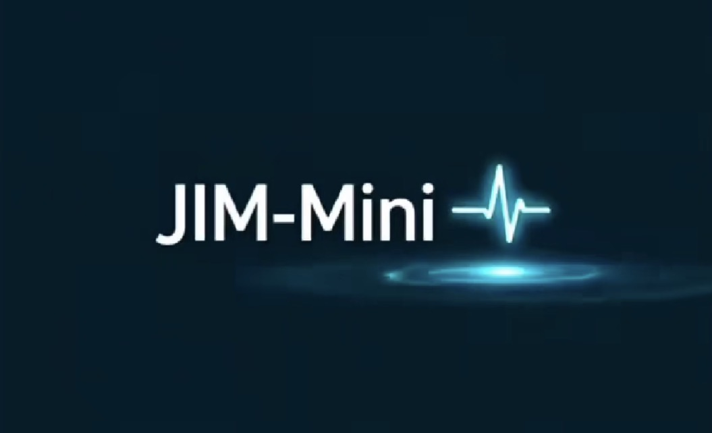

JIM-Mini is a wearable personal health guidance system designed for individuals with known medical conditions. It continuously monitors vital signs and summons the help its owner programmed in advance when abnormal readings are detected — 24/7 protection, even during sleep.
A fall reaches the Guardian. Silence after "are you okay?" summons the trusted person and, when the box is ticked, an emergency-services request — while the companion guides the hands on the scene through CPR at a paced, flashing, ticking 110 a minute, and relays a dispatcher-ready briefing in the background.
The wearable recognizes patterns of elevated stress related to known mental-health conditions and responds with calming protocols or alerts — guided breathing the app paces and speaks, a mood-and-stress journal that notices climbs before they become crises, and a coach that knows your own baseline.
An AI companion tracks spending behavior and offers guidance to keep it aligned with your budgeting plans — monthly limits per category, a heads-up at 80% while the month can still be saved, and a finance coach for the re-plan.